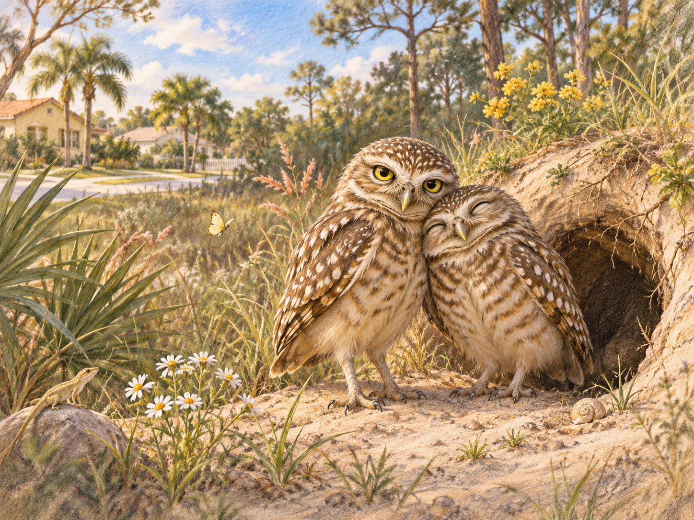

THE CENTER OF THE STORY
The Owls of Quiche Ct.
and the worlds beneath our feet
The story begins with two burrowing owls who once made their home on Quiche Ct. From there, it grows outward into poetry, music, conservation, family history, caves, and imaginary homes beneath the ground. Choose any branch to explore.
I would like to get some illustrated photos of the 2 owls in question who were once at 49 Quiche Ct.

START HERE · HOME
A burrow becomes a doorway
A funny letter to the neighbors introduces the owls. Their story leads to hidden habitats, underground adventure, a family’s history, and music and poetry across generations.
Begin with the neighborhood story →CHOOSE A PATH
The owls & their world
CHOOSE A PATH
Poetry & family
CHOOSE A PATH
Underground worlds
One story. Many paths.
Every chapter can be expanded as original photos, poems, music, research, and stories arrive. The connected layout is inspired directly by the hand-drawn sitemap.